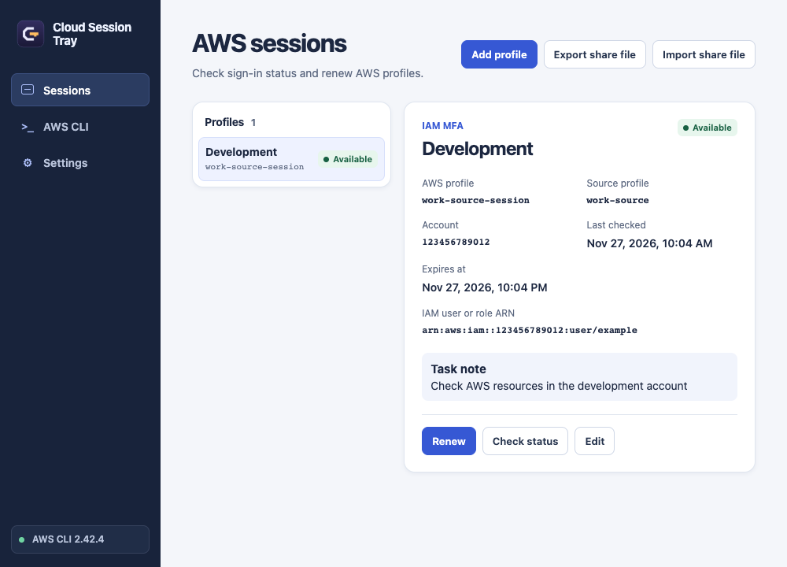
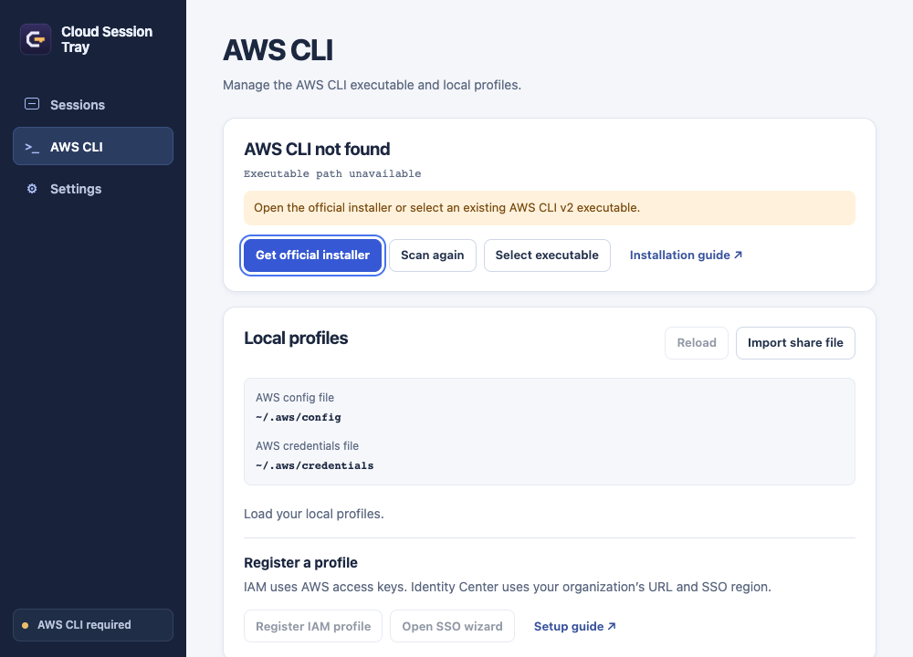
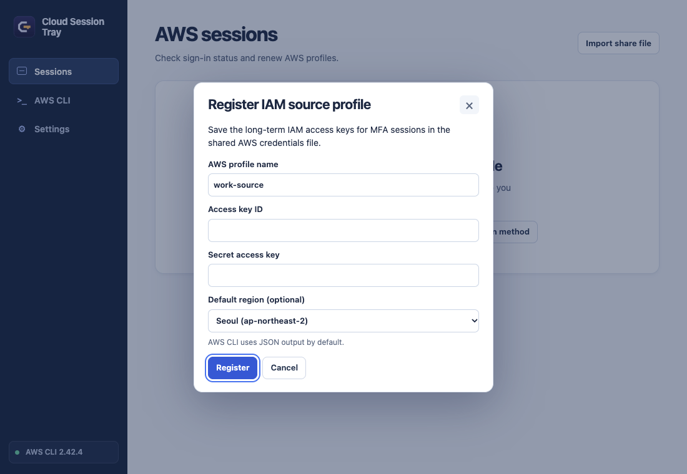
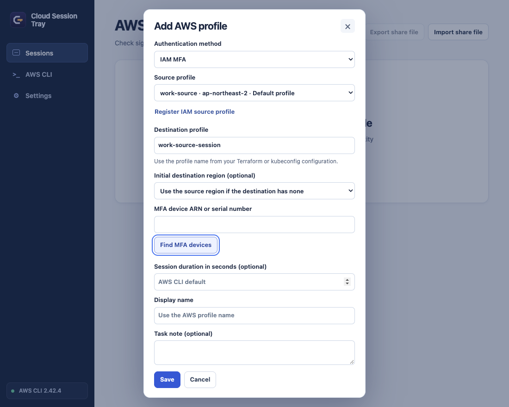
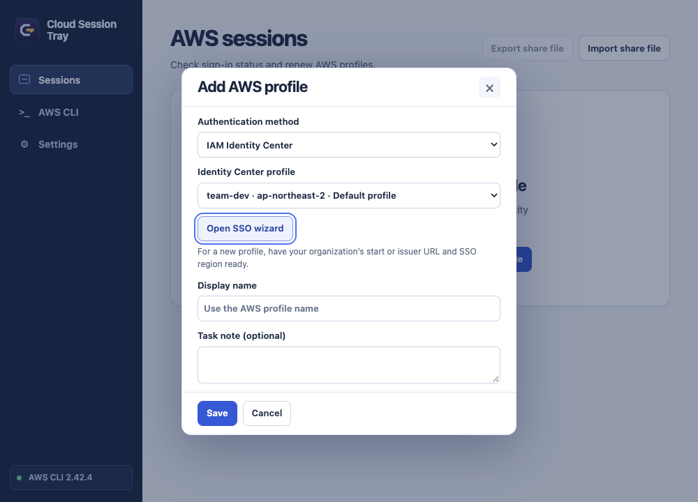
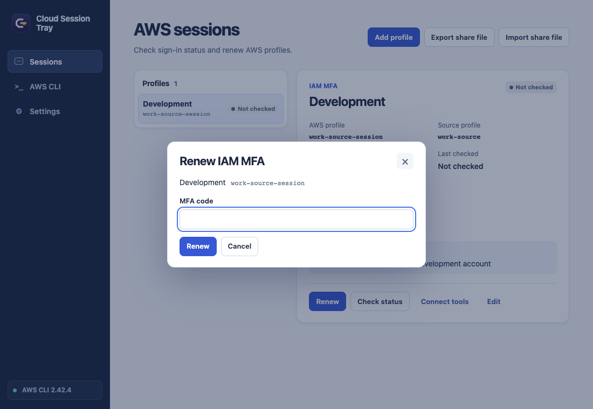
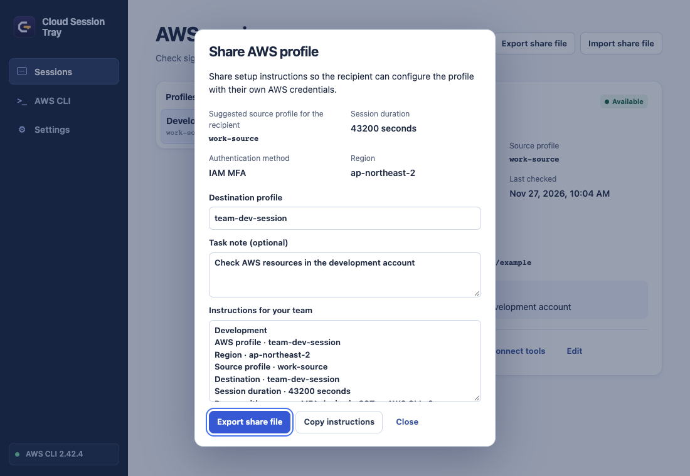
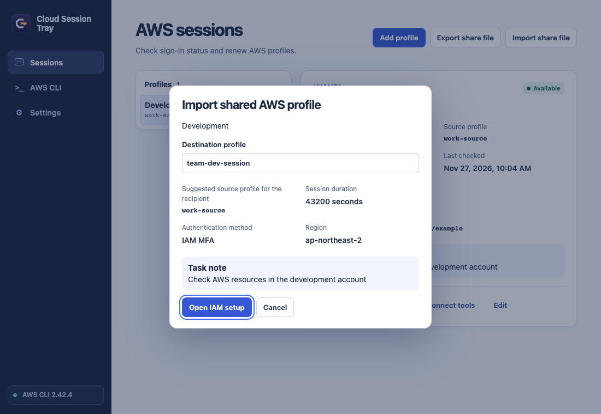

macOS · Apple Silicon
Open the DMG, drag Cloud Session Tray to Applications, then launch it. The build uses ad hoc signing. If Gatekeeper blocks the launch, follow Apple’s instructions for opening the app.
Check and renew AWS CLI profiles from your macOS menu bar or Windows system tray.
Installation instructions
Open the DMG, drag Cloud Session Tray to Applications, then launch it. The build uses ad hoc signing. If Gatekeeper blocks the launch, follow Apple’s instructions for opening the app.
Run the EXE installer and complete setup. Open Cloud Session Tray from the Start menu. The installer is unsigned, so Windows may show a publisher warning.
The app follows your system language. To change the display language, choose one in Settings and click Save settings at the top.

Device lookup requires the iam:ListMFADevices permission.



To get a reminder before IAM MFA credentials expire, enable Expiration notifications in Settings, then click Save settings at the top.

The file contains profile settings and the task note. AWS access keys, session tokens, and MFA codes stay on your device.

